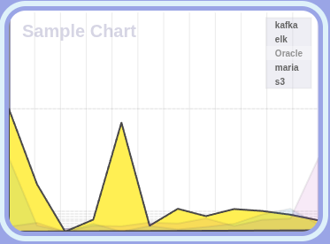
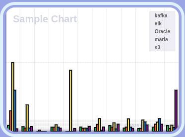

Area Chart

Bar Chart

Line Chart

Pie Chart

Ratio Bar Chart
ChaosChart is a lightweight JavaScript charting library designed for simple rendering of various
chart types directly into HTML <canvas> elements without any third-party frameworks. This
library is ideal for embedding clean and minimal charts into websites, dashboards, or internal tools.
The library renders five chart types by dynamically creating HTML elements and mounting them into a root DOM node:
<div id="root">
<!-- Title section -->
<div class="titleContainer">
<p>ChaosChart Library v0.0.1</p>
<p>© All rights reserved by author Kooin Shin.</p>
<div class="htmlCheck">HTML is loaded and script is running.</div>
</div>
<!-- Canvas-rendered charts -->
<div class="chartContainer"><canvas class="chartCanvas"></canvas></div>
...
</div>npm install chaoschartOr, if you're linking locally:
npm install file:../path/to/chaoschartimport startup from 'chaoschart';
window.onload = () => {
startup(); // Appends all chart elements to #root
};Make sure you have an HTML element with id="root" in your DOM.
chaoschart/
├── factory/
│ └── DefaultChartFactory.js
├── ChartConstants.js
├── sample.js
├── index.js
‚îî‚îÄ‚îÄ README.md© All rights reserved by Kooin Shin.
Not licensed for public/commercial use without permission.